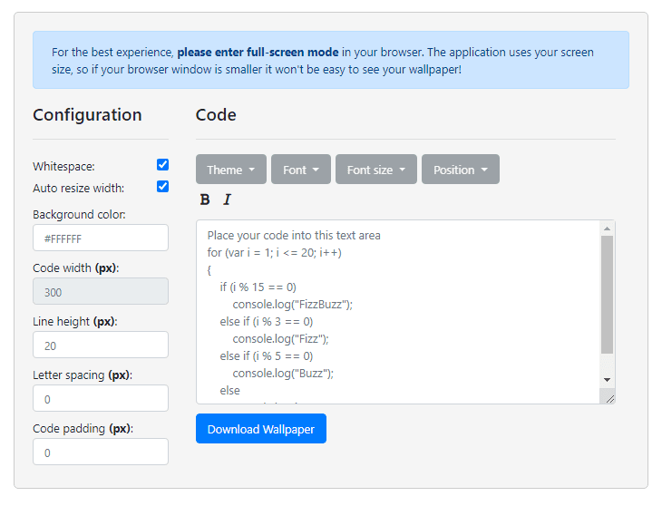
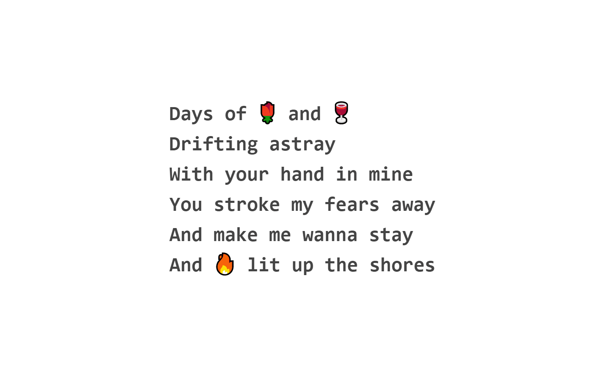

Online wallpaper creation tool
Uploaded on 19th July, 2020. Read time: 6m
While I was looking for a cool new sleek wallpaper and after browsing like a quadrillion number of pixels I noticed that there is a lot of wallpapers of some random cute or funny code in them. I thought, wait, I wanna make my own wallpaper with my own shit code I wrote, for the giggles. Realizing I would have to push the boundaries of what is possible to create a wallpaper using an image editor and watch YouTube videos or read some book, I decided to make a tool that you can just plug your code in and play around with it.

"This application lets you create a wallpaper based on code you give it and by manipulating different parameters that change how the text and background looks. You can pick from all sorts of themes and fonts for your code and tweak the wallpaper until you're satisfied."
-- From the Github page
Thanks to a few sources related to styling programming environments by changing fonts and themes, I tried to bring them all together into this application, to make the idea of creating wallpapers with code in them flexible and efficient. It is really just a long list of themes and fonts into a file each that you can choose from. The application works by using your entire screen which your browser currently occupies as a canvas for creating your wallpaper. If you want to make the wallpaper for a different screen if you have multiple of them, you just move the window to the other screen and the code will be re-positioned accordingly. The page of the app encourages you to use full-screen because you would be able to see clearly how the code looks, otherwise the browser's navigation UI and the operating system's UI will make it look like something is off. You can see the actual wallpaper behind the interface just by hovering over it, the focus will shift:

I really don't know why anything like this didn't exist until now lol, or maybe I couldn't find anything like it. Unfortunately, I spent most of my time creating a wallpaper using profound fortunes and quotes, since I have a liking to them:

I used html2canvas in order to capture the DOM element that contains the wallpaper's content. Basically theres two divs, one for the interface and one for the wallpaper. The Interface allows you to manipulate the content inside the wallpaper div or itself. When the user is done with designing a wallpaper, he clicks the download button and an image is generated:
downloadButton.addEventListener('click', () => {
wallpaper.style.opacity = focusedValue;
html2canvas(wallpaper, {
width: window.screen.width,
height: window.screen.height,
})
.then(canvas => {
document.body.appendChild(canvas);
})
.then(() => {
const canvas = document.getElementsByTagName('canvas')[0];
canvas.style.display = 'none';
const image = canvas.toDataURL('image/png');
const a = document.createElement('a');
a.setAttribute('download', 'wallpaper.png');
a.setAttribute('href', image);
a.click();
canvas.remove();
wallpaper.style.opacity = notFocusedValue;
});
});
… and voila! You have a wallpaper.